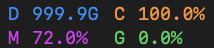
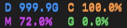

StatPeek 耗能实测与修复
2026-11-02 · macOS 27.2 · 0.3.9 (30) → 0.3.9 (32) · 同一台 Mac，接交流电，生产进程闭合面板测量
| 系统进程指标 | Build 30 | Build 32 | 变化 |
|---|
| 平均 CPU（单核百分比） | 59.44% | 0.59% | 下降 99.0% |
| 中断唤醒 / 秒 | 183.89 | 5.12 | 下降 97.2% |
每组连续测量 30 秒。数据来自 macOS proc_pid_rusage，CPU 时间按 Mach timebase 转换，与系统 top 交叉核对。这里不是瓦数或电池续航测试；powermetrics 需要管理员权限，本次未提权。系统电源断言中未发现 StatPeek 阻止睡眠。
橙线：Build 30 绿线：Build 32 同一量程
原因与修复
sample 中原进程主要在 NSStatusItem 重复生成副本快照、原生文字子视图布局与图层渲染；更新后，主线程主要等待 Mach 事件。状态项现在由原生 NSStatusBarButton.image 显示结果，系统等宽字体仍通过原生 NSTextField 绘制成 1x/2x 图像；源视图不接入状态项的副本层级。保持每 2 秒刷新和原有两行、配色、点击及辅助功能。
候选 Build 31 与验证边界
先修复了静止布局重复写 frame：100 次调用由 900 次写入变为 0，但系统复测仍为 59.47% CPU / 187.21 次每秒唤醒。因此未把单个探针通过当作问题解决；最终 Build 32 才切断副本层级反馈。不能据此归责为整个 AppKit 的普遍缺陷，结论限于此自定义子视图用法和当前系统的实测路径。
显示回归
独立非激活实窗，合成数据，原始 PNG 无滤镜；前图为 Build 31（与 Build 30 显示方式相同），后图为 Build 32 的原生按钮图像。字体、字号、尺寸及读数保持。无用户鼠标键盘输入或前台激活。
浅色 · 调整前浅色 · 调整后深色 · 调整前
深色 · 调整后
验证与回执
- Release 64 项 XCTest 通过，含 448 帧选择/配色/外观/比例像素验证、16 种选择的静止布局回归及图像比例与原生按钮容纳检查。
- 2 个浅深色原生状态栏窗口及 500 次原生 NSStatusBarButton 手势通过。
- 已后台替换固定个人 Applications 副本；设置与磁盘历史保留，详见安装回执。
安装和完整验证回执 · 旧版逐秒计数 · 新版逐秒计数 · 后续 60 秒复测 · 旧版调用栈节选 · 新版调用栈节选 · 系统 top 前测 · 系统 top 后测
活动监视器的 Energy Impact 是相对指标；12 小时指标为历史平均，不会代表修复后的即时状态。Apple 官方说明。用户截图中的 StatPeek 指标为 1203.8 / 914.22，未将其解释为瓦数。